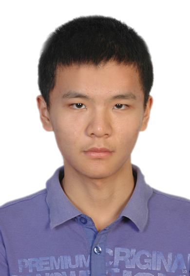

郑远航
性别：男
出生年月：1997.10
学历：本科
电话：15589817378
邮箱：
zyh971025@126.com
/
zheng-yh19@mails.tsinghua.edu.cn

教育经历
2019.9至今 清华大学 博士（专业是计算机科学与技术，研究方向是自然语言处理，导师是
刘洋教授
）
2015.9-2019.6 清华大学 本科（获工学学士学位，专业是计算机科学与技术，保研时年级排名15/144，四年总GPA 3.83/4.0）
2012.9-2015.6 山东省青岛第二中学 高中
2009.9-2012.6 山东省青岛实验初级中学 初中
2003.9-2009.6 山东省青岛四流中路第一小学 小学
学术经历
发表的学术论文
Self-Supervised Quality Estimation for Machine Translation
Yuanhang Zheng
, Zhixing Tan, Meng Zhang, Mieradilijiang Maimaiti, Huanbo Luan, Maosong Sun, Qun Liu, Yang Liu
Proceedings of EMNLP 2021
Segment, Mask, and Predict: Augmenting Chinese Word Segmentation with Self-Supervision
Mieradilijiang Maimaiti, Yang Liu,
Yuanhang Zheng
, Gang Chen, Kaiyu Huang, Ji Zhang, Huanbo Luan, Maosong Sun
Proceedings of EMNLP 2021
MGIMN: Multi-Grained Interactive Matching Network for Few-shot Text Classification
Jianhai Zhang, Mieradilijiang Maimaiti, Gao Xing,
Yuanhang Zheng
, Ji Zhang
Proceedings of NAACL-HLT 2022
工作经历
2022.1，在面向外交的多语言机器翻译系统服务（二期）项目中，负责了多语言机器翻译系统训练所需的平行语料数据的预处理
2021.9-2021.11，在基于大数据的类人智能关键技术与系统（二期）项目中，基于中文GPT预训练模型，完成了古诗文默写题和古诗鉴赏简答题的答题程序的开发
2021.7，在天津市武清开发区高村科技创新园参加社会实践，完成了值班表自动生成工具和绩效考核系统的开发
2020.2-2020.6，在清华大学的“计算机程序设计基础”课程中担任助教
主要获奖情况
2019.6，获清华大学计算机系优秀毕业生
2018.9，获清华大学计算机系学业优秀奖学金
2017.9，获清华大学计算机系学业优秀奖学金
2016.5，获第七届蓝桥杯全国软件和信息技术专业人才大赛全国总决赛C/C++程序设计大学A组二等奖
2015.9，获清华大学2015级新生二等奖学金
2014.7，获全国信息学奥林匹克竞赛（NOI）金牌（第9/53名）
2014.5，获全国信息学奥林匹克精英赛（CTSC）铜牌（第59/100名）
2013.7，获全国信息学奥林匹克竞赛（NOI）金牌（第44/52名），并获得保送清华大学的资格
2013.5，获亚洲与太平洋地区信息学奥林匹克竞赛（APIO）金牌（第16/31名）
基本技能
编程语言：掌握C++、Python，能够基于PyTorch和Transformers库编写基于BERT、GPT等预训练模型的简单的自然语言处理程序，此外还了解Java、MATLAB、VHDL等编程语言
外语：2015.12，全国大学英语四级考试599分；2016.6，全国大学英语六级考试602分
其他
爱好钢琴，2009年通过钢琴业余考级十级